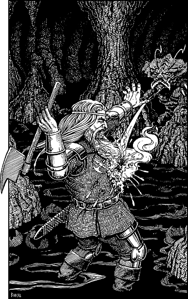

74
As the rock golem crumbles to dust, you rush to Prince Leomin’s side and try to revive him with your Magnakai Curing skills. The healing warmth of your powers pass through your hands and into his body, and his eyelids flicker open as his consciousness stirs. (The healing of Leomin’s wounds costs you 2 ENDURANCE points.)
When his senses return, firstly he retrieves his battle-axe from the floor, and then he turns to offer you his thanks. Suddenly his eyes widen and he gasps with shock: Shom’zaa is approaching silently behind you. Leomin grabs you by the tunic and pulls you aside as he raises his battle-axe in readiness to hurl it at Shom’zaa’s hideous form. But before he can release the axe, he is felled by a stream of clear fluid intended for you. It strikes his chest and boils as it eats through his crimson breastplate. With a heart-rending scream he collapses to the ground, mortally wounded.

You wrench the Sun-crystal from your pocket and turn to confront Shom’zaa, your arm poised ready to throw your deadly device. But already the fell creature has retreated and taken cover among the stalagmites. You run to the stone ramp to scan the cavern, and your Kai Sixth Sense alerts you to his hiding place. His body is hidden, but the top of his ghastly head can be seen protruding above a stalagmite less than 30 feet from where you stand.
If you wish to throw the Sun-crystal at Shom’zaa’s head, turn to 38.
If you wish to attempt to get a clearer view of Shom’zaa before you hurl the Sun-crystal, turn to 272.